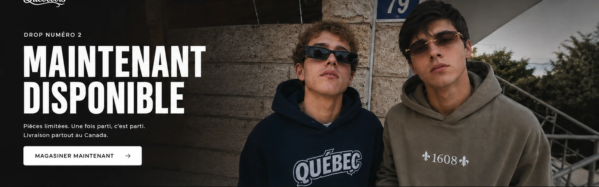

1608 / MILLE-SIX-CENT-HUIT
CONÇU ICI.PORTÉPARTOUT.
Une signature née au Québec. Des coupes amples, des graphismes choisis et des vêtements faits pour être portés, pas seulement regardés.
EXPLORER LA COLLECTIONLES PIÈCES.

UN DÉTAIL.UNE SIGNATURE.
Une pièce se reconnaît à sa coupe, son dessin et à la façon dont elle tombe. Chez 1608, ces détails font le travail. Le reste appartient à celui qui la porte.
DÉCOUVRIR 1608MILLE.
SIX.
CENT.
HUIT.
1608 est une marque de vêtements indépendante imaginée au Québec. Des références locales, une identité graphique marquée et des pièces qu'on peut intégrer à sa garde-robe sans compromis.
VOIR NOS VÊTEMENTSQUESTIONS.
Les informations essentielles, sans surprises.
Peut-on commander maintenant ?
La boutique est actuellement une prévisualisation interactive. Les fiches et le panier fonctionnent, mais aucun paiement n'est encore accepté. Les modalités seront publiées avant l'ouverture des commandes.
Où les vêtements sont-ils conçus ?
Les concepts et graphismes de 1608 sont imaginés au Québec. Cela ne signifie pas que tous les textiles sont fabriqués au Québec; les détails de production seront précisés par produit lorsque confirmés.
Comment choisir ma taille ?
Chaque fiche propose une sélection de tailles. Les mesures exactes du fabricant seront ajoutées avant la mise en vente. Les coupes varient d'une pièce à l'autre.
Livrez-vous partout au Canada ?
La livraison au Canada est prévue. Les tarifs, les délais de production et les conditions de retour seront confirmés avant l'activation des commandes.